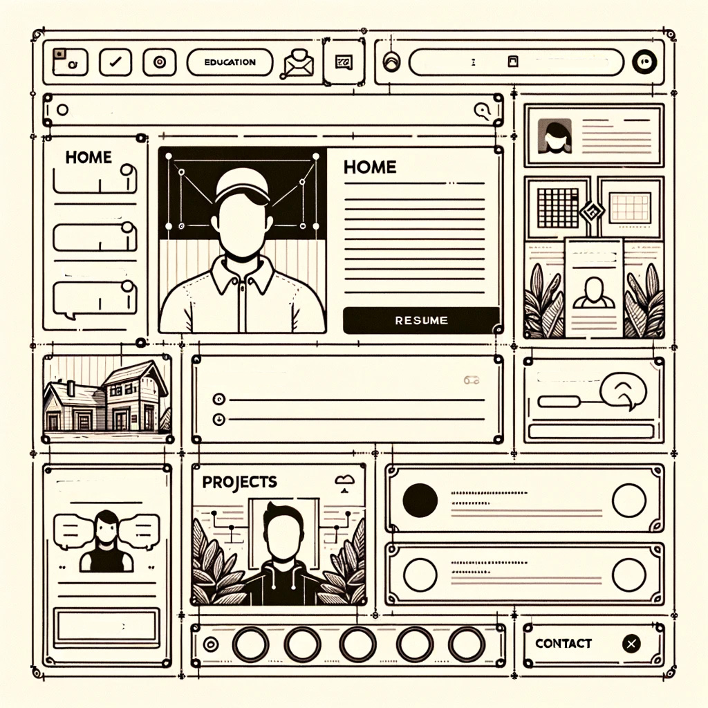

A personal portfolio website showcasing my journey, skills, experiences, and notable projects in game development and computer science.
Potential employers, collaborators, peers in the field of game development and computer science, and anyone interested in my professional journey.
The portfolio will have a minimalist design with a centered layout and a neutral color palette to keep the focus on the content. The primary color will be a dark blue (#2C3E50) complemented by red (#E74C3C) for headings, a light gray (#ECF0F1) for the background, and sky blue (#3498DB) for links and accents. The design is inspired by the following websites:
The portfolio will be a single-page website with the following sections:
Below is the wireframe that showcases the possible layout and design of the portfolio:
